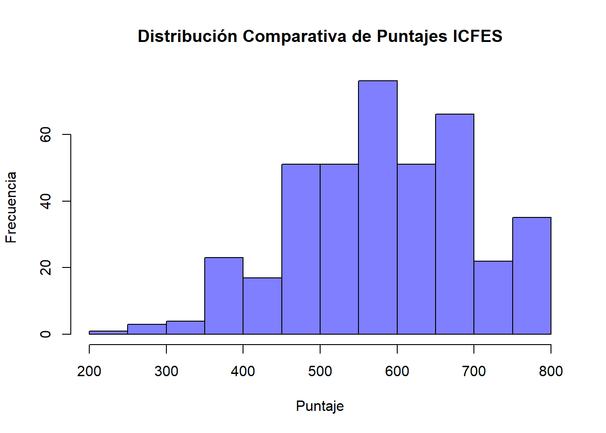
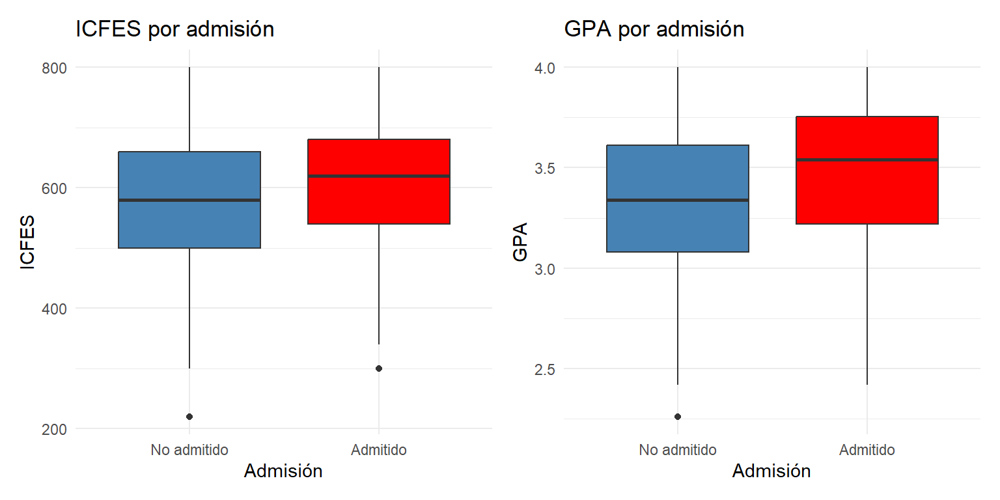
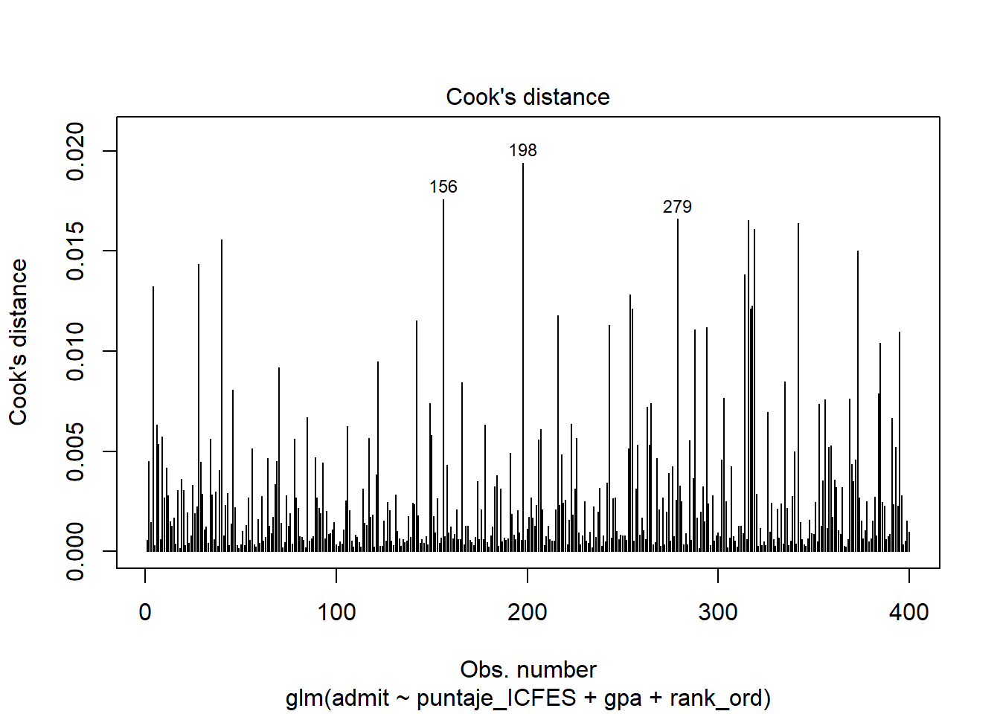
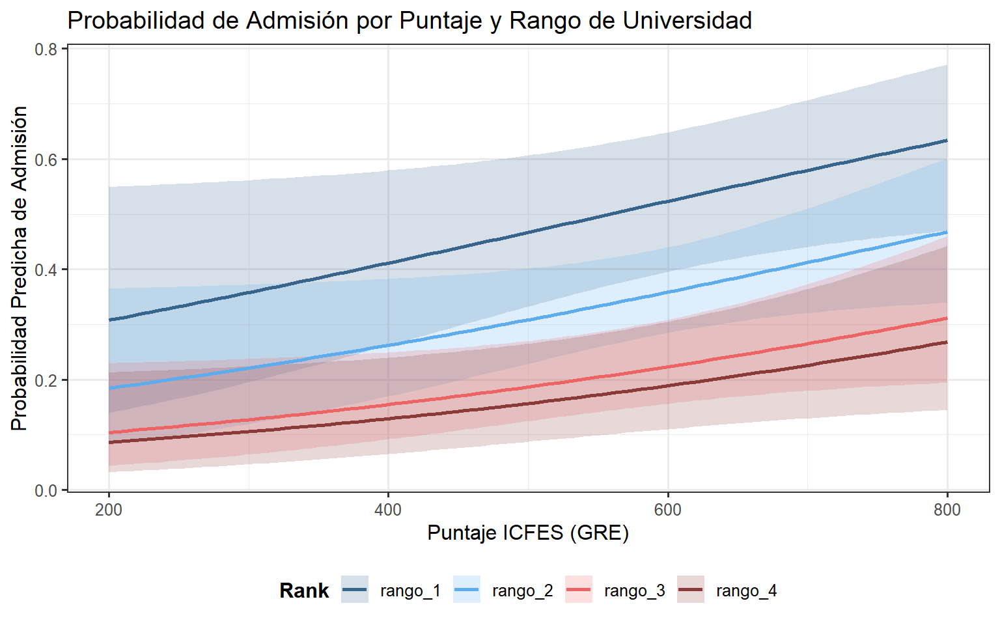

# Load required libraries
library(aod)
library(ggplot2)
library(dplyr)
library(tidyr)
library(car) # Required for logistic regression assumption tests (VIF, Box-Tidwell)
# Load the dataset
dt <- read.csv("https://stats.idre.ucla.edu/stat/data/binary.csv")
# Rename 'gre' to 'puntaje_ICFES' for local context
names(dt)[names(dt) == "gre"] <- "puntaje_ICFES"
# Convert rank into an explicitly ordered factor
dt$rank_cat <- NA
dt$rank_cat[dt$rank == 1] <- "rango_1"
dt$rank_cat[dt$rank == 2] <- "rango_2"
dt$rank_cat[dt$rank == 3] <- "rango_3"
dt$rank_cat[dt$rank == 4] <- "rango_4"
dt$rank_ord <- factor(dt$rank_cat,
levels = c("rango_1", "rango_2", "rango_3", "rango_4"),
ordered = TRUE)
# Format the binary response variable 'admit' into a descriptive factor
dt <- dt %>%
mutate(admit = factor(admit, levels = c(0, 1), labels = c("No admitido", "Admitido")))Data Lab: Logistic Regression (Binomial Model)
In this practical lab, we will analyze data using a Binomial Logistic Regression Model. We will explore the data, fit the model, verify assumptions (such as linearity of the logit and multicollinearity), and visualize predicted probabilities across different profiles.
1. Data Loading and Preparation
We load the UCLA binary dataset which studies how GRE scores (renamed to puntaje_ICFES), GPA, and undergraduate institution rank influence admission to postgraduate programs. The response variable, admit, is binary.
2. Exploratory Data Analysis (EDA)
Before running the model, let’s explore the relationships in our data.
summary(dt) admit puntaje_ICFES gpa rank
No admitido:273 Min. :220.0 Min. :2.260 Min. :1.000
Admitido :127 1st Qu.:520.0 1st Qu.:3.130 1st Qu.:2.000
Median :580.0 Median :3.395 Median :2.000
Mean :587.7 Mean :3.390 Mean :2.485
3rd Qu.:660.0 3rd Qu.:3.670 3rd Qu.:3.000
Max. :800.0 Max. :4.000 Max. :4.000
rank_cat rank_ord
Length:400 rango_1: 61
Class :character rango_2:151
Mode :character rango_3:121
rango_4: 67
# Cross-tabulation between admission and university rank
xtabs(~admit + rank_ord, data = dt) rank_ord
admit rango_1 rango_2 rango_3 rango_4
No admitido 28 97 93 55
Admitido 33 54 28 12# Comparative Histogram for ICFES scores
hist(dt$puntaje_ICFES,
col = rgb(0, 0, 1, 0.5),
main = "Distribución Comparativa de Puntajes ICFES",
xlab = "Puntaje",
ylab = "Frecuencia",
xlim = c(200, 800)) 
p1 <- ggplot(dt, aes(x = admit, y = puntaje_ICFES, fill = admit)) +
geom_boxplot() +
scale_fill_manual(values = c("steelblue", "red")) +
labs(title = "ICFES por admisión", x = "Admisión", y = "ICFES") +
theme_minimal() +
theme(legend.position = "none")
p2 <- ggplot(dt, aes(x = admit, y = gpa, fill = admit)) +
geom_boxplot() +
scale_fill_manual(values = c("steelblue", "red")) +
labs(title = "GPA por admisión", x = "Admisión", y = "GPA") +
theme_minimal() +
theme(legend.position = "none")
library(patchwork) # To display side by side
p1 + p2
3. Model Fitting
We estimate the binomial logit model using the Generalized Linear Model (glm) function with a logistic link.
# Estimate the binomial logit model
logit <- glm(admit ~ puntaje_ICFES + gpa + rank_ord, data = dt, family = "binomial")
# View the summary
summary(logit)
Call:
glm(formula = admit ~ puntaje_ICFES + gpa + rank_ord, family = "binomial",
data = dt)
Coefficients:
Estimate Std. Error z value Pr(>|z|)
(Intercept) -4.881757 1.113111 -4.386 1.16e-05 ***
puntaje_ICFES 0.002264 0.001094 2.070 0.0385 *
gpa 0.804038 0.331819 2.423 0.0154 *
rank_ord.L -1.189399 0.287159 -4.142 3.44e-05 ***
rank_ord.Q 0.232092 0.251685 0.922 0.3564
rank_ord.C 0.099017 0.212052 0.467 0.6405
---
Signif. codes: 0 '***' 0.001 '**' 0.01 '*' 0.05 '.' 0.1 ' ' 1
(Dispersion parameter for binomial family taken to be 1)
Null deviance: 499.98 on 399 degrees of freedom
Residual deviance: 458.52 on 394 degrees of freedom
AIC: 470.52
Number of Fisher Scoring iterations: 4Interpretation: The estimated coefficients are in log-odds units. For example, for each additional unit in the ICFES score, the log-odds of admission increase by about 0.002. For each additional unit in GPA, the log-odds increase by 0.804. Since
rank_ordis an ordered factor, R outputs polynomial contrasts (.L,.Q,.C) to capture linear and non-linear trends across ranks.
3.1 Odds Ratios
To interpret the coefficients properly, we transform them from log-odds into Odds Ratios (OR).
exp(cbind(OR = coef(logit), confint(logit)))Waiting for profiling to be done... OR 2.5 % 97.5 %
(Intercept) 0.00758368 0.0008102071 0.0642159
puntaje_ICFES 1.00226699 1.0001376016 1.0044457
gpa 2.23454482 1.1738582158 4.3238349
rank_ord.L 0.30440429 0.1701010347 0.5271488
rank_ord.Q 1.26123523 0.7642378161 2.0569058
rank_ord.C 1.10408551 0.7305857958 1.68055094. Verification of Logistic Regression Assumptions
Logistic regression doesn’t assume normality of residuals or homoscedasticity like OLS, but it has its own strict assumptions.
# 1. Absence of Multicollinearity (VIF)
# Values near 1 are excellent.
vif(logit) GVIF Df GVIF^(1/(2*Df))
puntaje_ICFES 1.134377 1 1.065071
gpa 1.155902 1 1.075129
rank_ord 1.025759 3 1.004248# 2. Absence of Strongly Influential Outliers
# Points significantly higher than the rest warrant further investigation.
plot(logit, which = 4, id.n = 3)
5. Predictions and Visualizations
We calculate predicted probabilities of admission holding GPA at its mean, across all 4 institution ranks and varying ICFES scores.
# Create simulation grid
n_dt2 <- with(dt, data.frame(
puntaje_ICFES = rep(seq(from = 200, to = 800, length.out = 100), 4),
gpa = mean(gpa, na.rm = TRUE),
rank_ord = factor(rep(c("rango_1", "rango_2", "rango_3", "rango_4"), each = 100),
levels = c("rango_1", "rango_2", "rango_3", "rango_4"),
ordered = TRUE)
))
# Predict values on link scale (log-odds) and compute standard errors
n_dt3 <- cbind(n_dt2, predict(logit, newdata = n_dt2, type = "link", se = TRUE))
# Transform into probabilities using plogis
n_dt3 <- within(n_dt3, {
PredictedProb <- plogis(fit)
LL <- plogis(fit - (1.96 * se.fit))
UL <- plogis(fit + (1.96 * se.fit))
})
# Plot the predicted probability curves
ggplot(n_dt3, aes(x = puntaje_ICFES, y = PredictedProb)) +
geom_ribbon(aes(ymin = LL, ymax = UL, fill = rank_ord), alpha = 0.2) +
geom_line(aes(colour = rank_ord), size = 1) +
scale_fill_manual(values = c("steelblue4", "steelblue2", "indianred2", "indianred4")) +
scale_colour_manual(values = c("steelblue4", "steelblue2", "indianred2", "indianred4")) +
labs(x = "Puntaje ICFES (GRE)", y = "Probabilidad Predicha de Admisión",
fill = "Rank", colour = "Rank",
title = "Probabilidad de Admisión por Puntaje y Rango de Universidad") +
theme_bw(base_size = 12) +
theme(legend.position = "bottom",
legend.title = element_text(face = "bold"))Warning: Using `size` aesthetic for lines was deprecated in ggplot2 3.4.0.
ℹ Please use `linewidth` instead.
5.1 Specific Population Profiles
We can evaluate specific cases of admission probability by constructing concrete student profiles.
# Create concrete population profiles
perfil_A <- data.frame(puntaje_ICFES = 800, gpa = 4.0,
rank_ord = factor("rango_4", levels = c("rango_1", "rango_2", "rango_3", "rango_4"), ordered = TRUE))
perfil_B <- data.frame(puntaje_ICFES = 600, gpa = 3.0,
rank_ord = factor("rango_1", levels = c("rango_1", "rango_2", "rango_3", "rango_4"), ordered = TRUE))
# Predict linear index (log-odds)
pred_A <- predict(logit, newdata = perfil_A, type = "link", se.fit = TRUE)
pred_B <- predict(logit, newdata = perfil_B, type = "link", se.fit = TRUE)
# Convert log-odds into bounded probabilities
cat("Probabilidad Perfil A (Top ICFES/GPA, Rango 4):", round(plogis(pred_A$fit), 3), "\n")Probabilidad Perfil A (Top ICFES/GPA, Rango 4): 0.374 cat("Probabilidad Perfil B (Mid ICFES/GPA, Rango 1):", round(plogis(pred_B$fit), 3), "\n")Probabilidad Perfil B (Mid ICFES/GPA, Rango 1): 0.445
TipCross-References
- Return to Topics overview